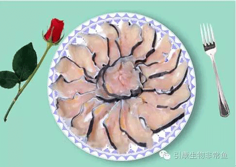
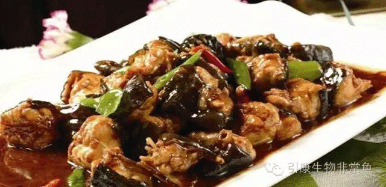
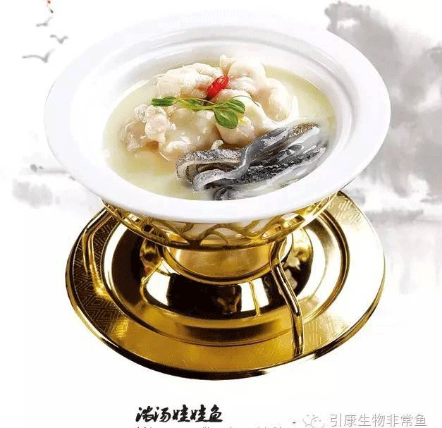

宰杀娃娃鱼一般有两种方法.另外非常鱼强烈申明，任何物种都有它生存的理由，我们吃娃娃鱼并不是破坏生物链，而是在保护中合理利用，提升它的价值！要知道，娃娃鱼现在人工繁殖成活率已超过95%！
第一种为不放血的杀法，此为保证娃娃鱼血液中营养不流失的方法，不过缺点是烹饪出来的肉色泽不白亮，不是特别美观。非常鱼建议如果家庭自行食用，采取这种烹饪方式最合适的。
1、首先按要宰杀娃娃鱼大小准备适合的桶（木桶、胶桶、钢桶都可以），再备一盖板，能完全封住桶口即可（盖板只可大于等于桶口，不可小于桶口）。
2、准备好90度左右的热水，倒进桶中，水深勿超过桶深三分之二。
3、将娃娃鱼猛然置于桶中马上盖上盖子（温馨提醒：为防止开水溅出来烫伤，需两人配合）因为娃娃鱼力气较大，需用较大力气按压桶盖，约五分钟后，娃娃鱼不再翻腾，用钩子取出。
4、准备小刀（水果刀）刮洗表皮粘液，一些不易刮洗的部位如脚，可用钢丝球再次刮洗至表面干净无米粒状颗粒为止，再从肚剖开，除去内脏备用。
另外一种杀法主要针对保持肉质白净与美观的杀法，不过缺点是要求有较强的动手能力，非常鱼建议此种方法适合酒店及有专业操作技能场所使用。
1、先将娃娃鱼头部用刀背用力砸几下，让娃娃鱼行动缓慢，晕头转向。
2、待娃娃鱼行动缓慢后，从鱼脖子（肚皮脖子）部砍一刀放血（不要砍断），娃娃鱼虽然被打晕，但它依然还有活动能力，故如有条件最好两人配合放血，放血时切记手勿靠近娃娃鱼牙齿，否则出于自我保护能力，它会使劲咬你手指。（切勿抱着侥幸心理让它咬到手指，非常鱼的工作人员曾就因为被咬到手指，到医院里缝了好多针）
3、首先按要宰杀娃娃鱼大小准备适合的桶（木桶、胶桶、钢桶都可以），再备一盖板，能完全封住桶口即可（盖板只可大于等于桶口，不可小于桶口）
4、准备好90度左右的热水，倒进桶中，水深勿超过桶深三分之二。
5、将娃娃鱼猛然置于桶中马上盖上盖子（温馨提醒：为防止开水溅出来烫伤，需两人配合）因为娃娃鱼力气较大，需用较大力气按压桶盖，约五分钟后，娃娃鱼不再翻腾，用钩子取出。
6、准备小刀（水果刀）刮洗表皮粘液，一些不易刮洗的部位如脚，可用钢丝球再次刮洗至表面干净无米粒状颗粒为止，再从肚剖开，除去内脏备用。
其实娃娃鱼也是鱼，不用把它想的太复杂，你喜欢鱼炖着吃那就炖着吃，你喜欢鱼用干锅煎那就煎，总之，你就把它当成普通的鱼弄着吃，最主要的是要符合你自己的口味。做鱼呐！最重要的就是开心！
1、原料：取刮洗好的娃娃鱼350克（活体约1斤），然后用刀切成方形小块。
2、辅料：冬笋150克、熟猪油50克、料酒25克、白糖10克、水淀粉30克、葱段20克、蒜瓣20克、姜片10克、食盐10克、酱油50克、鸡粉10克、植物油1000克（约耗50克）、浓鸡汤200克。
3、烹制方法：炒锅坐旺火上，加植物油烧热，投入鱼块，炸至金黄色捞出控油，冬笋改刀成1厘米见方小块，过油捞出控油。原锅去油，坐旺火上烧热，加熟猪油25克，然后入葱段、蒜瓣、姜片爆出香味，再放鱼块、冬笋块颠翻一下，加入料酒、酱油、食盐、白糖、鸡汤，烧开后将锅移文火上，加锅盖烧约20分钟，待鱼烧熟，将锅再移旺火上，加鸡粉，用水淀粉勾芡，最后加熟猪油25克颠翻，淋香油盛盘上桌。
4、工艺关键：a、鱼块用酱袖先淹渍10分钟，然后烹制；b、不用勾芡，中火烧至2/5时加入鸡粉，出锅装盘即成；c、保鲜的娃娃鱼最好用做红焖。
5、风味特点：色泽红亮，软烂适口，汤汁浓醇，风味独特。
1、原料：取刮洗好的娃娃鱼1000克（活体约3斤），然后用刀切成方形小块。
2、配料：菜心2棵，水发香菇20克，火腿15克，水发玉兰片15克，鸡腿2个。 调料：精盐6克，绍酒10克，味精2克，胡椒粉1克，葱25克，姜15克，猪油20克。
3、制作方法： 炒锅置旺火上，加猪油，烧五成热，放入葱段（10克）、姜（5克）、鱼块，烹绍酒略煸炒后倒出，拣去葱、姜，冲洗干净，放入汤盆，加入鸡腿、火腿、香菇（1个）、葱段（15克）、姜（10克）、精盐和清水1000克盖好盖，用净纸封口，上笼用中火炖熟取出。揭盖，取出葱姜、鸡腿点缀上氽熟的菜心即可。
4、工艺关键：此菜亦可直接用小火慢炖而成。
5、风味特点：汤汁入味，浓郁可口，唇齿之间皆留香。
归根结底，娃娃鱼怎么弄的好吃还是要你自己决定，因为只有你自己才懂自己的口味，如果在制作过程中有什么不懂的，请关注公众号发送消息，我们会第一时间回复您！
娃娃鱼 ICP备案编号：陕ICP备07010879号
电话：029-62563888 029-85599333
传真：029-85599333